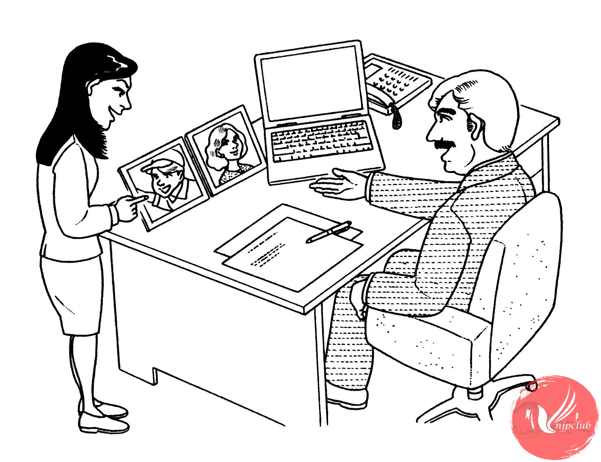

| 林： |
これ、どなたの 写真ですか。 |
| シュミット： |
息子の ハンスです。運動会の とき、撮った 写真です。 |
| 林： |
元気そうでね。
|
| シュミット： |
ええ。ハンスは 走るのが 速いんですよ。 日本の 小学校にも 慣れて、友達も できて、毎日 楽しそうです。 |
| 林： |
よかったですね。 こちらの 方は 奥さんですか。きれいな 方ですね。 |
| シュミット： |
ありがとう ございます。 妻は いろいろな ことに 興味が あって、いっしょにいると、おもしろいですよ。 |
| 林： |
そうですか。 |
| シュミット： |
特に 歴史が 好きで、時間が あれば、 古い 町を 歩いて います。 |